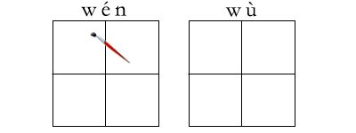
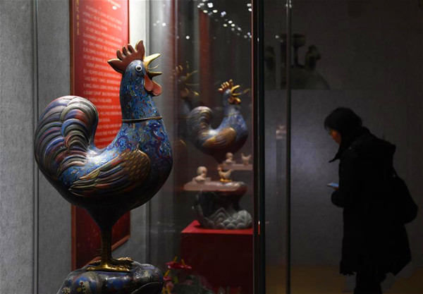
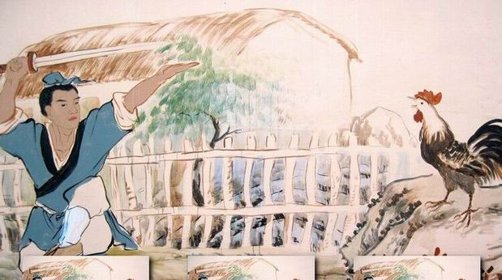

2016-12-16阅读（14,525）


日前，南京博物院为迎接农历鸡年而举办的“锦绣鸡”院藏鸡文物展开幕。本次展览设“闻鸡起舞——酉鸡篇”“包罗万象——艺术篇”“妙趣横生——民俗篇”3个篇章，展出历代鸡文物近200件，向人们介绍各种鸡形象中包含的中国传统文化。

新词速递words
农历 nóng lì
鸡年 jī nián
举办 jǔ bàn
院藏 yuàn cáng
文物展 wén wù zhǎn
开幕 kāi mù
闻鸡起舞 wén jī qǐ wǔ
酉 yǒu
包罗万象 bāo luó wàn xiàng
妙趣横生 miào qù héng shēng
成语故事【闻(wén)鸡(jī)起(qǐ )舞(wǔ)】
Rising Up upon Hearing the Crow of a Rooster to Practice Sword Playing

晋代的祖(zǔ)逖(tì)是个胸怀坦荡、具有远大抱负的人。可他小时候却是个不爱读书的淘气孩子。
Zu Ti of the Jin Dynasty was a big-hearted and far-sighted person who, however, was very naughty and did not like to study when he was a small kid.
进入青年时代，他意识到自己知识的贫乏，深感不读书无以报效国家，于是就发奋读起书来。
When he became a young man, he felt acutely that his knowledge was inadequate and that he could not serve his country well if he did not study hard. So he put all his energies into study.
他广泛阅读书籍，认真学习历史，从中汲取了丰富的知识，学问大有长进。
He read extensively, studied history from which he absorbed rich knowledge, and made good progress.
他曾几次进出京都洛阳，接触过他的人都说，祖逖是个能辅佐帝王治理国家的人才。
He had been to the capital city Luoyang several times, and all the people who had come into contact with him said that Zu Ti was a talented person who was capable of assisting the emperor in governing the country.
祖逖24岁的时候，曾有人推荐他去做官司，他没有答应，仍然不懈地努力读书。
When he was 24, someone recommended him to be an official, but he refused the post. He was still making a sustained effort in his studies.
后来，祖逖和幼时的好友刘琨一志担任司州主簿。
Later, both Zu Ti and Liu Kun, his close friend since early childhood, were appointed chief clerks responsible for document administration in the Sizhou Prefecture.
他与刘琨感情深厚，不仅常常同床而卧，同被而眠，而且还有着共同的远大理想：建功立业，复兴晋国，成为国家的栋梁之才。
He and Liu Kun cherished a deep affection for each other. They not only often shared the same bed in sleeping, but also shared the same lofty ideals; to render meritorious service in rejuvenating the Jin Dynasty and play the part of the pillars of the state.
一次，半夜里祖逖在睡梦中听到公鸡的鸣叫声，他一脚把刘琨踢醒，对他说：“别人都认为半夜听见鸡叫不吉利，我偏不这样想，咱们干脆以后听见鸡叫就起床练剑如何？”刘琨欣然同意。
Once, Zu Ti heard a cock crow in the wasteland in his dream at midnight. He kicked Liu Kun a wake, saying to him: People say it is unlucky to hear a cock crow in the wasteland. I don’t think so. What about getting up and practicing sword playing the moment we hear the cock crow form now on? Liu Kun agreed readily.
于是他们每天鸡叫后就起床练剑，剑光飞舞，剑声铿锵。春去冬来，寒来暑往，从不间断。
So every day when the cock crow, they got up and practiced sword playing, the cold steel of the swords glinting and flashing. Day by day, year in and year out, they never stopped.
功夫不负有心人，经过长期的刻苦学习和训练，他们终于成为能文能武的全才，既能写得一手好文章，又能带兵打胜仗。
As the saying goes, constant effort yields sure success. Through long periods of hard study and training, they finally became versatile persons versed in both civil and military affairs. They could write good essays, and were capable of leading troops in fighting victoriously.
祖逖被封为镇西将军，实现了他报效国家的愿望；刘琨做了都督，兼管并、冀、幽三州的军事，也充分发挥了他的文才武略。
Zu Ti was invested with the title the General for Guarding the Western Regions, thus realizing his wish of rendering meritorious service to the country. Liu Kun became a governor, and at the same time was in charge of the military affairs of the three prefectures of Bingzhou, Jizhou and Youzhou. In discharging his duties, Liu Kun also fully displayed his talent in both polite letters and martial arts.
故事出自《晋书·祖逖传》。
This story appears in “The Life of Zu Ti” in The History of the Jin Dynasty.
成语“闻鸡起舞”，形容发奋有为，也比喻有志之士，及时振作。
From this story people have coined the set phrase “rising up upon hearing the crow of a rooster to practice sword playing” to signify that someone is exerting himself to do something worthwhile. It is also used to signify that a person of noble aspirations exerts himself in time.